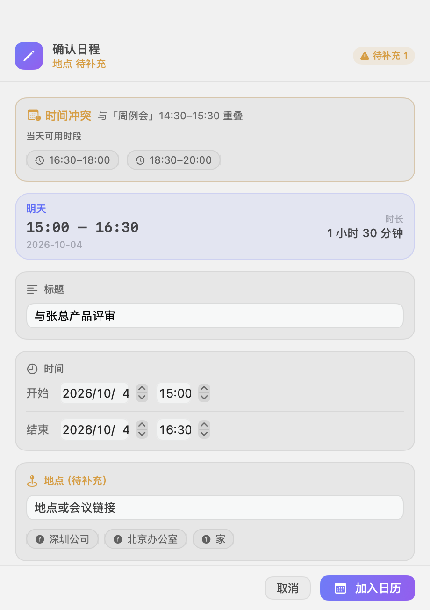
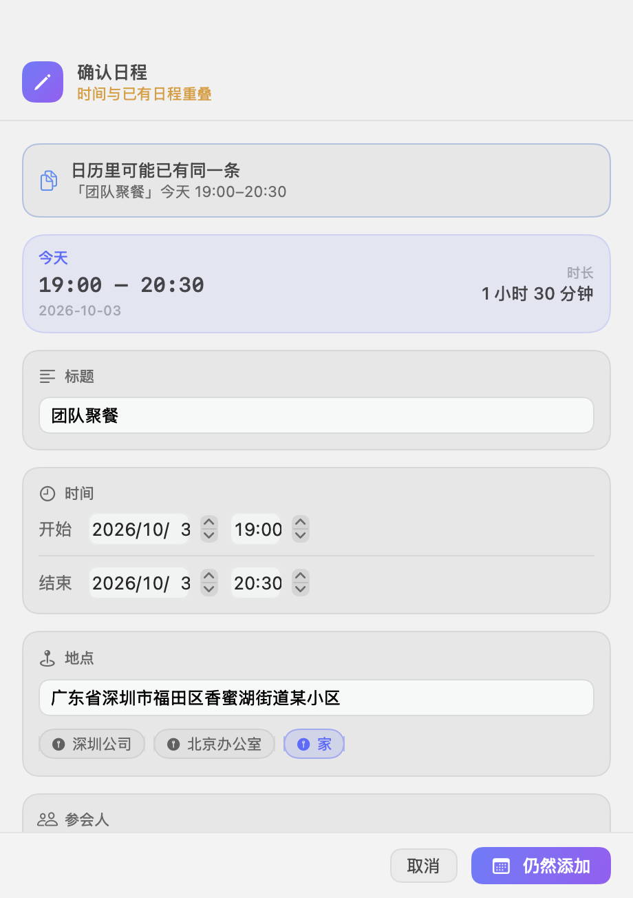
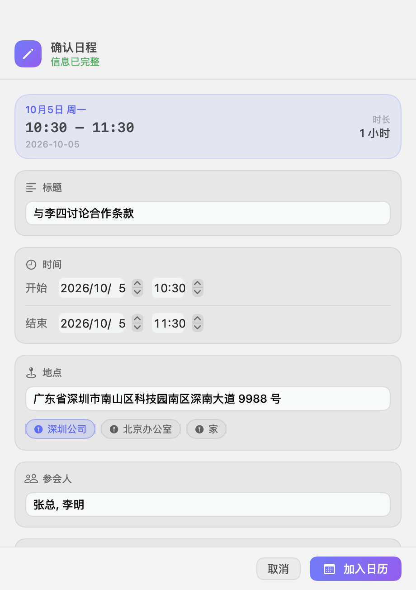
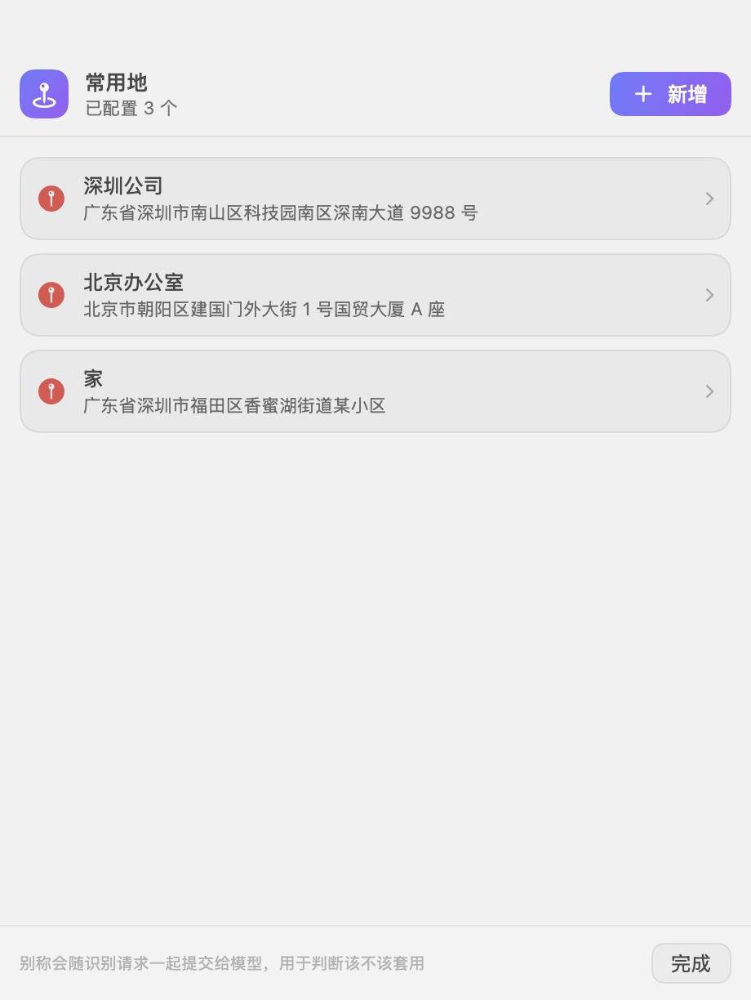

日程该进日历，而不是记在脑子里
约好的事就在聊天记录里躺着，手工录一遍，往往比谈话本身还费时间。
复制了时间，就得再抄一遍
打开日历、新建日程、填标题、调起止、补地点——一件五分钟能说清的事，录入又要五分钟。
「就那个时间，你知道的」
口语里的时间先是人的语言，再是日历的语言：「下周三下午三点」「周五上午聊一下」——脑子得先翻译一遍才敢填。
翻日历找空档，比约时间还累
定下来的时间撞上了已有安排，得自己翻一遍当天，看看挪到几点才不打架。
Scheduler 换了个活法：复制一下就完事——剩下的，它在后台替你做完。
复制那一刻，识别就已经完成
它不只是一个「粘贴板」，更像一个替你盯着日程的同事——该补的补上，该拦的拦住。
口语化的时间，直接懂
「下周三下午三点」「周五 14:00–15:00 在大新油画村见面」「今晚一起吃饭」——不用改成规范格式，复制过来就是准确的日期与时段。
要素不齐，也能录
只写「下周三」就自动推算日期；没写时长，按事件类型推断——会议 1 小时、聚餐 1.5 小时。缺的字段不用重来，在确认窗口里就地补。
截图同样可以
群聊截图、通知截图都行——文字在本机认出来，图片不出你的 Mac。一段话里说了三件事，就建三条（一次最多 5 条）。
撞了，直接给方案
与已有日程重叠时，通知上不是一句「撞了」，而是算好当天可行的空档——点「改到 07:00」就完成改期并写入，不用打开任何窗口。
同一件事，不会录两遍
群里刷屏、消息被转发，同一件事反复复制也不会在日历里堆成多条——「与老王见面」和「跟老王碰个头」，它认得出来是同一件事。
常用地，会读场景
配好「公司」「家」这类常用地，工作日程没写地点会自动补上公司；朋友聚餐这类场景则不套用——按场景判断，不会跨城市乱套。地图上选个点，起个别称就行。
安静的菜单栏公民
不是又一个要你供养的窗口程序——装好之后，你只在需要它的那一刻看到它。
原生 Swift，不占 Dock
没有 Electron、没有运行时，平时只有菜单栏上一个小图标。
权限全可选
日历、定位都不授权也能用，只是少了冲突检测与地址补全。
图标自己会换脸
菜单栏图标随系统明暗自动反色，亮色暗色都不突兀。
不会挂出两个图标
单实例保护：重复启动也只有一个 Scheduler 待命。
该看的地方，它都替你看过了
下面是四张真机画面：撞了怎么办、重复怎么办、确认长什么样、常用地在哪儿配。




没有服务端，就没有要信任的中间方
日程这类信息，最稳妥的保管方式是：它根本不离开你的电脑。
日程与配置，全部留在本机
没有服务端，也没有需要信任的中间方：日程通过系统日历直接读写，走的是系统权限；截图由本机取字，图片不出你的 Mac。识别请求直连你自己配置的 DeepSeek，不经过任何中间服务器。
花钱吗？只花你自己的用量
应用本体不收费（MIT）。唯一的开销是识别：请求走你自己的 DeepSeek 账号，用多少花多少，默认用单价最低的 flash 模型。本地还会先筛一道——明显的闲聊不触发模型调用，也就不产生费用。
三步，请它上岗
不用注册、不用登录——装上、填上 Key、复制一段话，就开始了。
下载安装
在 Releases 下载 Scheduler-v*.dmg，打开后把 Scheduler 拖进窗口里的「应用程序」。应用未经 Apple 公证，首次打开请右键点图标选「打开」。
填上你的 Key
点菜单栏图标 → 设置 → DeepSeek，填入在 platform.deepseek.com 生成的 Key，点「测试连接」。输入框旁的「粘贴」按钮会替你清掉首尾空格。日历与定位授权建议给上，不给也能用。
复制一段含时间的文本
通知随即弹出，点「加入日历」完成。写入成功还是失败，通知里都会说明结果——不会静默失败。之后每一次复制，它都在后台替你看一眼。
打开时提示「无法验证开发者」或「已损坏」？
这个应用没有 Apple 开发者证书、没有做公证，所以首次打开会被 Gatekeeper 拦一下。放行一次即可：
- 先双击打开一次，macOS 会提示无法验证开发者；
- 打开「系统设置 → 隐私与安全性」，在底部找到被拦的提示，点「仍要打开」。
或者，在终端执行一次这条命令，之后就能正常打开：
xattr -dr com.apple.quarantine /Applications/Scheduler.app
你可能想问
要花钱吗？
应用本体不收费，MIT 协议开源。唯一的开销是识别——请求走你自己的 DeepSeek 账号，默认用单价最低的 flash 模型；本地预筛还会先挡掉明显的闲聊，不产生识别费用。
要注册账号吗？
不用。没有服务端、没有账号、没有登录；日程写进你的系统日历，识别直连你自己配置的 DeepSeek。
我的日程数据会经过你们的服务器吗？
没有「你们的服务器」这回事。日程与配置全部在本机：日历通过系统接口读写，识别请求只发往你自己填的 DeepSeek，不经过任何中间服务器。
截图识别会把图片上传吗？
不会。截图由本机取字，图片不出你的 Mac——离开本机的只有认出来的文字。
日历权限不给能用吗？
能，只是少了冲突检测；定位不给，则少了地址补全。日历权限分「完整访问 / 仅写入 / 已拒绝」——只有「仅写入」或「已拒绝」时冲突检测会失效，面板与设置页都会标明当前状态和原因。
订阅日历里的「XX 截止」会算占用吗？
不会。这类不到 5 分钟的点事件不算占用时段，不会凭空造出假冲突。
同一件事复制两次，会建两条吗？
不会。去重是语义判断：「与老王见面」和「跟老王碰个头」认得出来是同一件事；判断不确定时，它会先问你，再决定加不加。
支持哪些 Mac？
macOS 14 及以上。